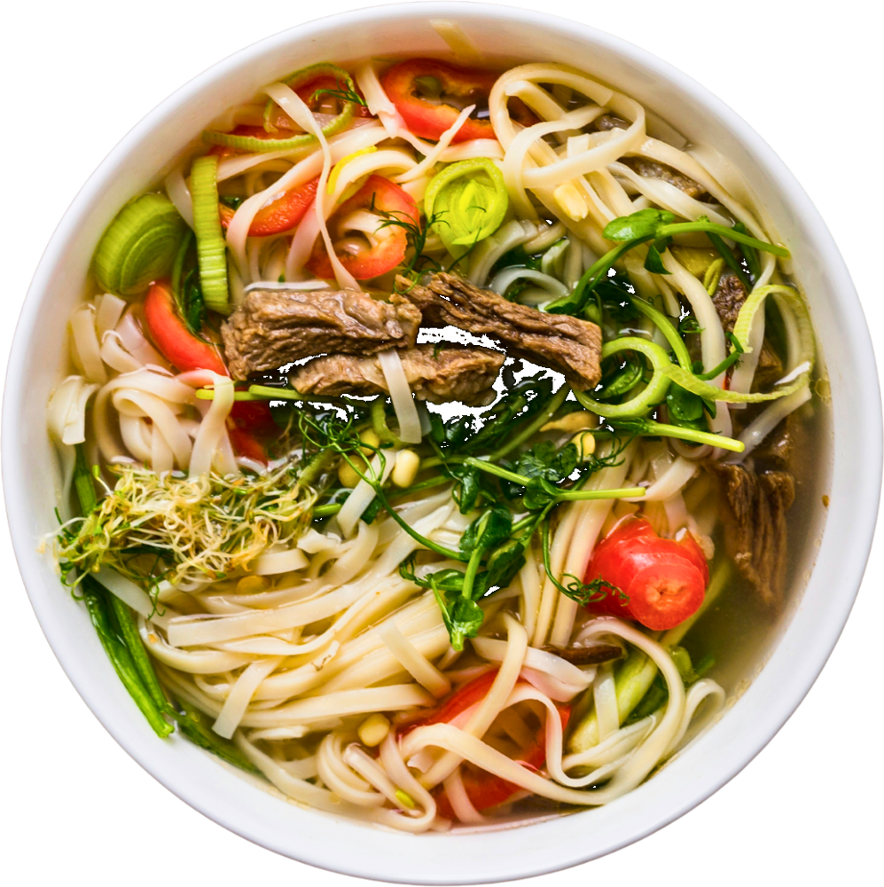
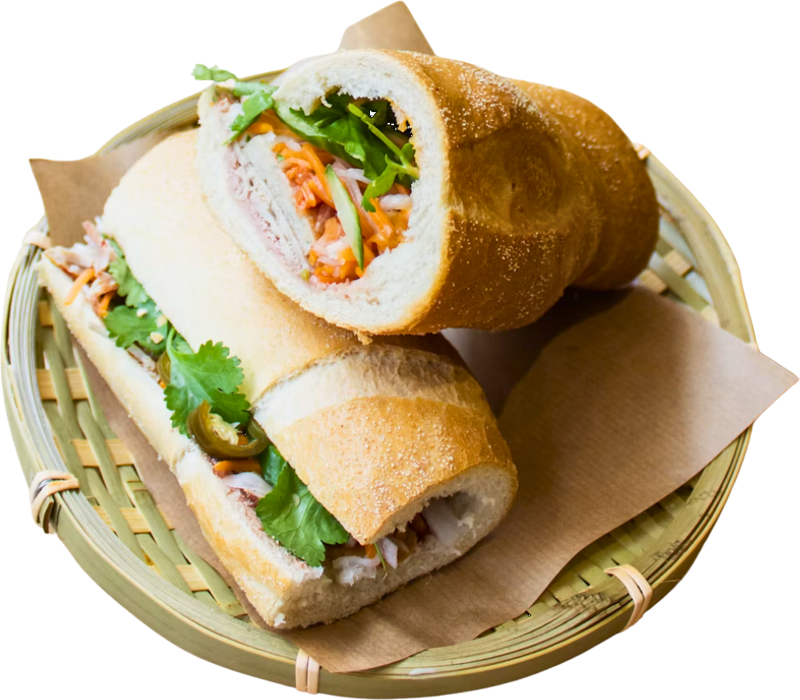
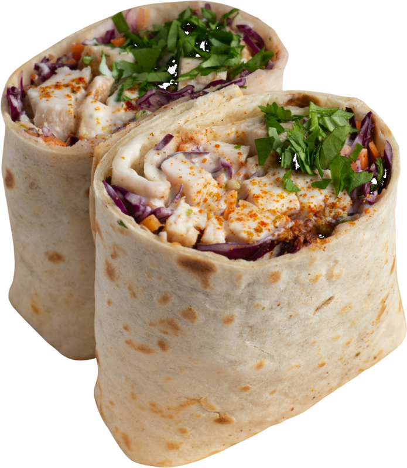
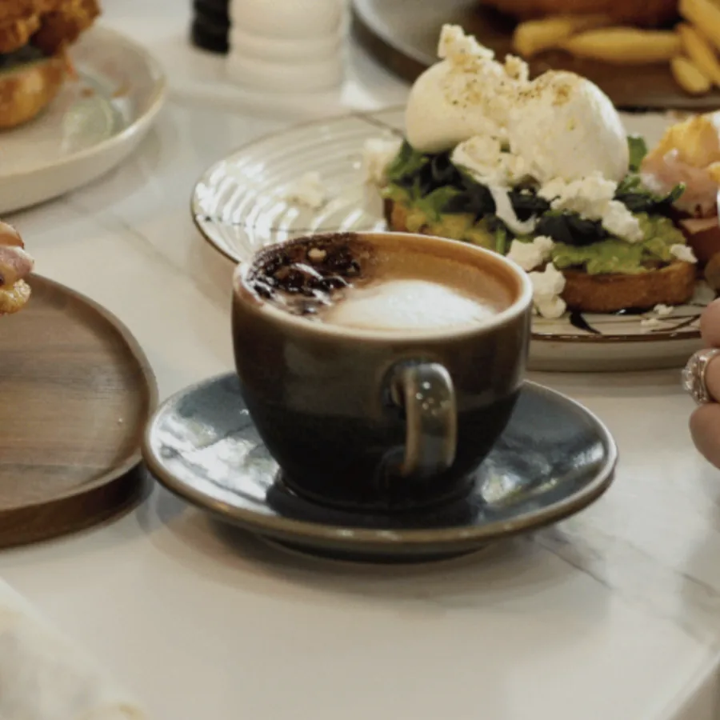
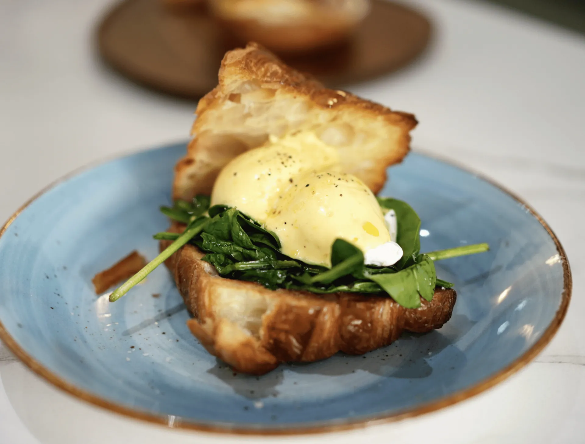
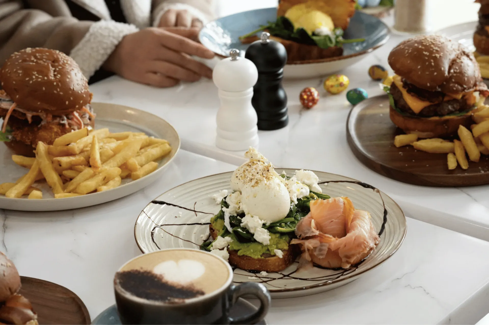

PHỞ
Hà Nội · house special
Phở bò
broth on since early morning
Beef noodle soup with rice noodles, Thai basil, bean sprouts, lime and fresh chilli.
$18.50ready ~20 min
Vietnamese family cooking, built for your workday.

Beef noodle soup with rice noodles, Thai basil, bean sprouts, lime and fresh chilli.

Crackly roll, roast pork, pâté, pickled carrot, coriander and chilli.

Roast chicken, avocado, spinach and tomato, toasted. Add chips $4.

Slow-dripped phin coffee over ice with sweet condensed milk.

Two poached eggs on toasted croissant, sautéed spinach and house Orchid hollandaise.

Bacon, eggs your way, mushroom, beans, avocado, hash browns and sourdough.
Vietnamese dish prices are samples — to be confirmed by Orchid Cafe.
Tear the stub to claim your welcome offer.
Show this pass at the counter on your first visit. [Terms / expiry to confirm]